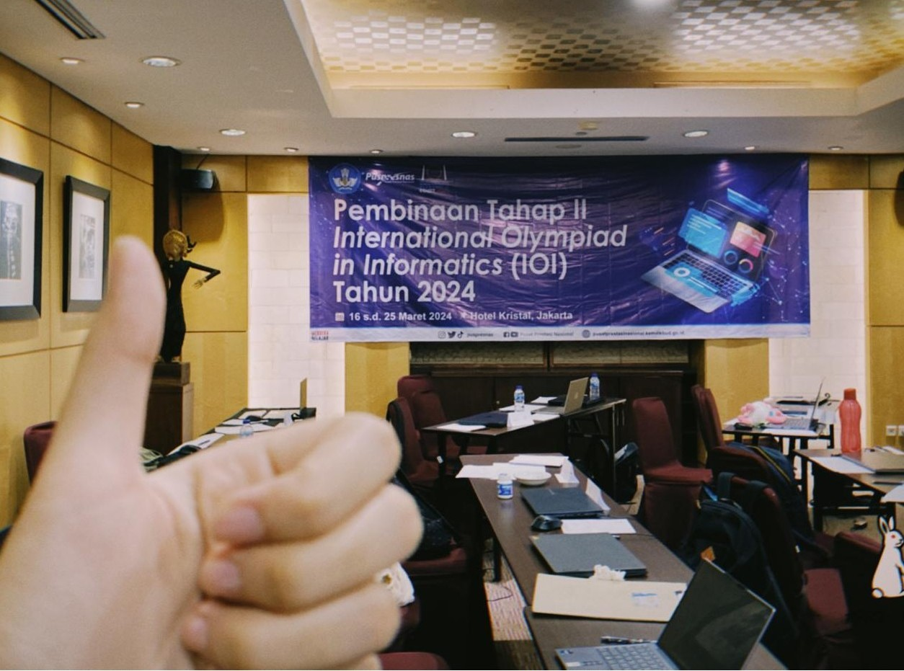
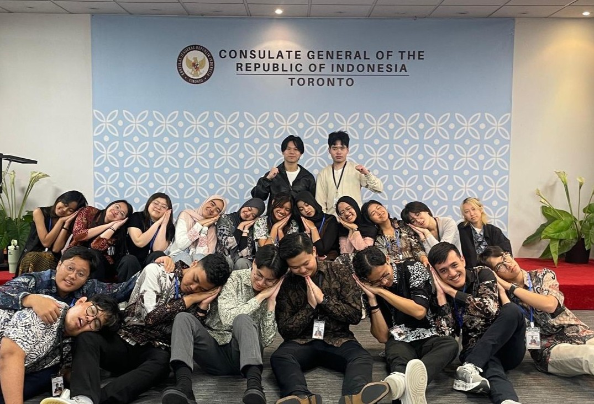
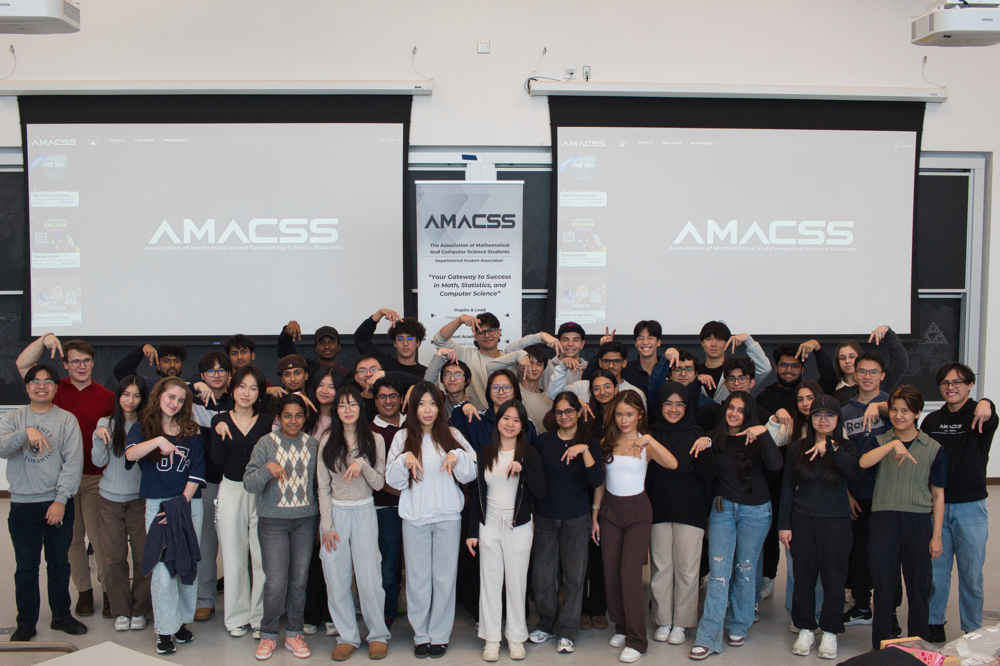
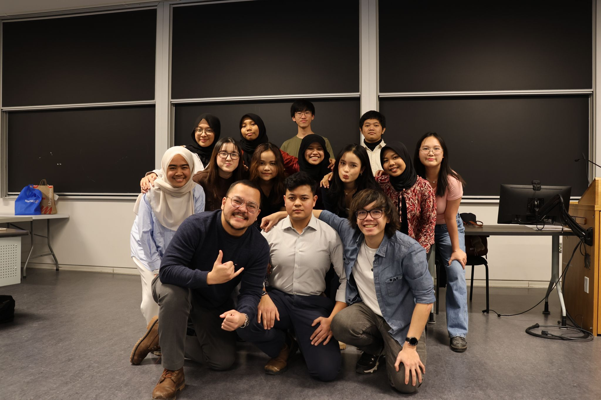
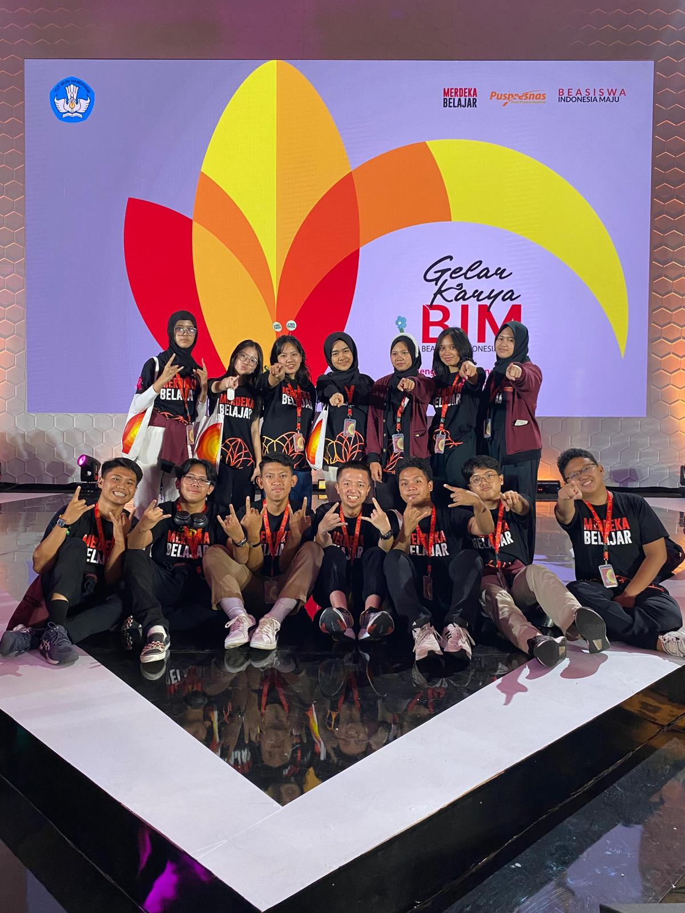
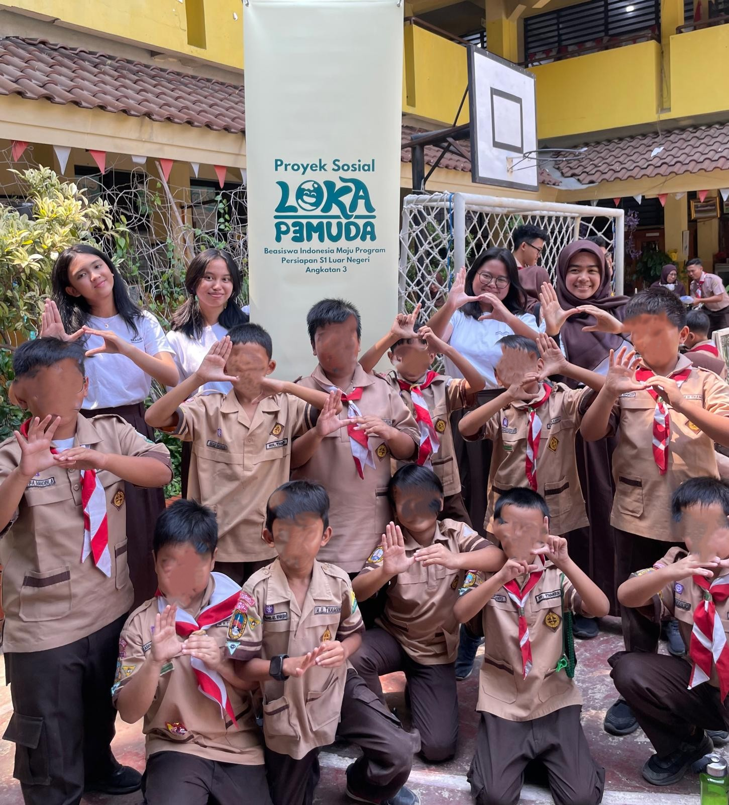
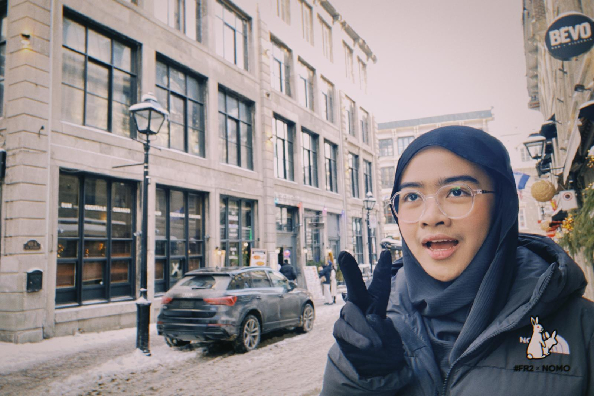

Abstract I'm a third-year undergraduate at the University of Toronto Scarborough, studying Computer Science, Statistics, and Economics on a full-ride Indonesia Maju Scholarship. I'm interested in machine learning and data science, especially their applications to economics and the social sciences. I got into computer science through competitive programming in middle and high school.
Keywords machine learning · data science · statistical modeling · software development
Currently · Fall 2026
- Undergraduate RA at PATRON Lab, doing computational social science
- Senior developer on UTRA's first R&D project
- TA for Intro Statistics and Theory of Computation
- Open to Summer 2027 internships in data science, analytics, software development, or research
Research
ongoing work firstComputational social science at PATRON Lab
PATRON uses computational methods to study Canadian governance. I'm working on a text-analysis project there; more details once the work is public.
How households revise stock-market expectations
Built and extended fixed-effects panel models in R on household survey data covering 1,000+ individuals across several waves, decomposing belief revision into within-person and between-person variation. Presented at the SUDS research showcase.
Trees Are All You Need: Classification of Parkinsonism, Atypical Parkinsonism, and Healthy Controls with the C-OPN Dataset
Tree-based models on an imbalanced, three-class clinical dataset. Through model selection and cross-validation we doubled macro-F1 from 33% (our first XGBoost baseline) to 67%, at 84% accuracy.
Mapping the computer science education literature
A systematic literature review with faculty and students. Our group screened 500+ papers, cross-checking each other's calls, and the work was presented as a poster at ITiCSE 2026.
Experience
Teaching Assistant
Three straight terms of weekly tutorials (about 30 students each) and grading with written feedback for roughly 900 students.
Senior Developer, R&D
One of three senior developers on UTRA's first R&D project, a robot tracking system.
Data Analyst Intern
Automated a recurring data-cleaning pass in Python, from about two hours to fifteen minutes; teammates adopted the scripts. Built the analysis and visualizations behind client decks across 5+ ESG and market-research engagements.
Head of Research, Strategy & Operations
Led a 4-person team that set up KPI tracking across 6+ divisions for a community of 550+ students. Feedback per event went from about 8 responses to 50.
Projects
- RoleMap. A Python ETL pipeline that pulls job postings and wage benchmarks from two REST APIs into PostgreSQL (Supabase) with duplicate-free upserts. In progress.Python · SQL · PostgreSQL code
- SmartAir. Android app for pediatric asthma care: symptom tracking, medication adherence, and asthma-control classification from patient-reported data. CSCB07, Fall 2025.Java · Android · Firebase code
- Music genre classification. Comparing ML models for genre prediction on matched Spotify Web API data. CSCC11, Winter 2026.Python · scikit-learn code
- Greenhouse gas emissions, 2010–2021. Regression, hypothesis testing, and visualization in R. STAA57, Winter 2025.R · ggplot2 · dplyr report
Toolkit
| Languages | PythonRSQLC / C++JavaTypeScript / JavaScriptLaTeX |
|---|---|
| Data & ML | pandasNumPyscikit-learnMatplotlibggplot2dplyrpanel regression |
| Web & apps | Next.jsReactFirebasePostgreSQL (Supabase)AndroidHTML / CSS |
| Tools | Git & GitHubPower BI (DAX)ExcelUnix command lineJiraClaude Code |
| Learning now | PyTorchdeep learning |
Honours
| 2026 | SUDS Research Scholarship, Data Sciences Institute One of 40 students selected across Canada |
| 2025, 2026 | Dean's List, University of Toronto Scarborough |
| 2024 – 2028 | Indonesia Maju Scholarship Full-ride national scholarship for undergraduate study abroad |
| 2022, 2023 | National Finalist, Indonesian National Informatics Olympiad Top 35 of 25,000+; Asia-Pacific Informatics Olympiad delegate |
Beyond the classroom

Competitive programming
About three years of middle and high school spent training for Indonesia's informatics olympiad, starting from zero. Made the national finals twice and went to APIO. It's where my love for algorithms started :D

PERMIKA Toronto
Two years on the executive team of the association for 550+ Indonesian students across the GTA. Started as an associate, ended up leading Research, Strategy & Operations. Had so much fun here!

AMACSS
Found AMACSS through their review seminars in first year, then joined as a Campus Life Associate in second year. Great team :)

IDNSA UTSC
Events associate in first year: logistics and planning for 6+ cultural and community events, plus a lot of arts and crafts for decorations lol.

Indonesia Maju Scholarship
Selected as an Indonesia Maju Scholar in grade 11 through competitive programming. Met so many cool people who are now studying all over the world. BIM is how I got to U of T.

Loka Pemuda
A teaching initiative I started with high school friends for students in Jakarta and Tangerang. Our way of giving back.

Travel
Yes, I love to travel.